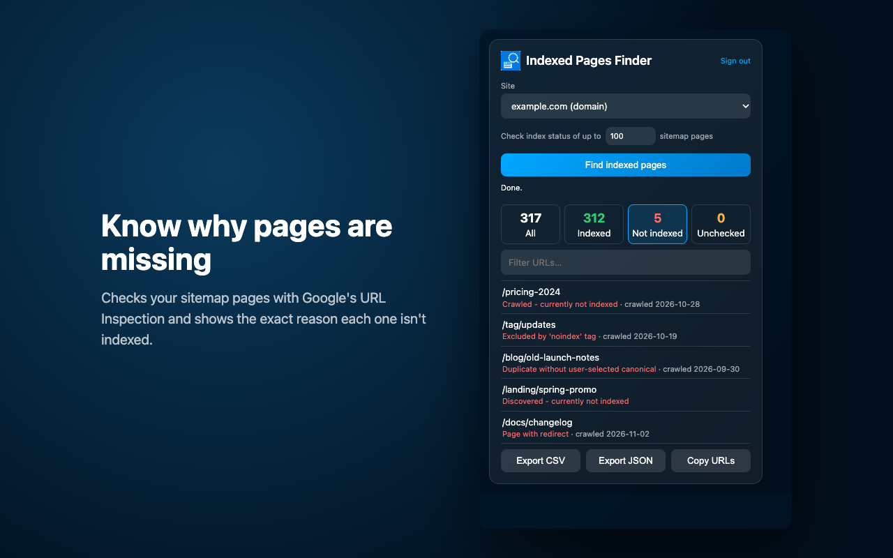

Indexed Pages Finder
A free Chrome extension that shows which pages of your website Google has indexed, which ones are missing, and why.

What it does
- Indexed pages: every page that appeared in Google Search in the last 16 months, with clicks, impressions, CTR and average position.
- Missing pages: reads your sitemaps to find pages that never showed up in search.
- The reason: asks Google's URL Inspection for the exact index status, such as "Crawled - currently not indexed" or "Excluded by noindex tag".
- Export: filter and search the results, then export to CSV or JSON, or copy the URLs.
How it uses your Google account
You sign in with Google and the extension asks for read-only access to Google Search Console. It uses that access only to show you indexing data for sites you have verified in Search Console. It can't change anything in your account or on your website. Your data stays in your browser: there are no servers, no analytics and no ads.